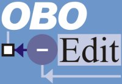

|  |
OBO-Edit WebinarVNC |
||||||
|
The OBO-Edit webinar software demo will be hosted via VNC. VNC stands for Virtual Network Computing. VNC allows many users at different computers to see (and sometimes manipulate) the same desktop. The best way to connect to the OBO-Edit VNC server is to use the applet on the front page. If you decide you'd like to use your own VNC client, connect to frizzled.lbl.gov:1. The password is oboedit_vnc. There are many VNC clients available. If you decide to download your own, we suggest
Note: We do not recommend Chicken of the VNC for Mac Users. Chicken of the VNC is a great VNC server for the Mac, but we've found it does not play nicely with the TightVNC server we are running. |